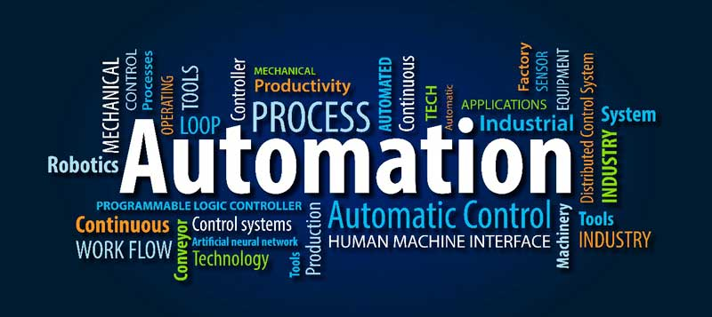

ISA
The International Society of Automation (ISA) is a non-profit professional association founded in 1945
to create a better world through automation. ISA empowers the global automation community through standards
and knowledge sharing, driving the advancement of individual careers and the overall profession.
ISA develops widely used global standards; certifies professionals; provides education and training;
publishes books and technical articles; hosts conferences and exhibits; and provides networking and
career development programs for its members and customers around the world.
Vision
Create a better world through automation
Mission
Empowering the global automation community through standards and knowledge sharing
Values
- Excellence - We provide industry leading unbiased content developed and vetted by a community of experts
- Integrity - We act with honesty, integrity, and trust—respecting others in all that we do
- Diversity and Inclusion - We are committed to being a global, diverse, and inclusive organization
- Collaboration - We seek out opportunities to work together for the benefit of the Society, its members, and our profession
- Professionalism - We uphold the highest standards of competence and skill in everything we do